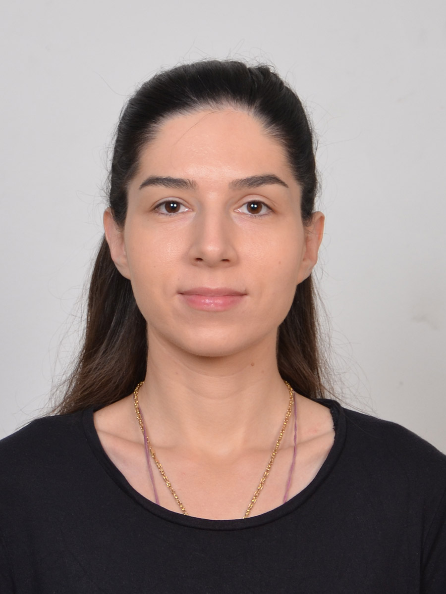

Andrijana Cerovic

Summary
I am a hardworking individual with experience in customer service and tehnical support.
Education
- Grammar School Svetozar Markovic Nis, physics and natural sciences class (2006-2010)
- University of Belgrade Faculty of Physics (2010-2012)
Undergraduate studies, Department of Theoretical and Experimental Physics
- University of Belgrade, School of Electrical Engineering (2023-present)
Undergraduate studies, Department of Electronics
Work Experience
- L1 System Analyst, Euronet Worldwide (May-November 2022)
- Monitoring payment transactions 24/7
- Handling issues and opening tickets
- Communicating with clients on English via email and phone
- Technical Support L2, SBB (Februaru-August 2023)
- Helping clients with technical issues concerning internet, television and landline
- Opening tickets for issues that require further handling
- Technical Support L1, Telekom Srbija (August 2023-present)
- Providing technical support for companies and business clients as well as for private users 24/7
- Opening tickets for issues that require further handling
- Communicating with clients on English
- Working both day as well as night shifts
Seminars and courses taken
- Petnica Science Center, Astronomy and Physics seminars (2006 - 2009)
- Oxford Summer English Course for international students (2007)
- Complete SQL Bootcamp (PostgreSQL) on Udemy 2024
- CompTIA Data+ Complete Course on Udemy 2025
Skills
- Basic knowledge in networking and data analytics
★★★
- PostgreSQL, HTML, SAP, Microsoft Office Suite
★★★
- Customer service
★★★
Languages
- Serbian native
- English C1
Other